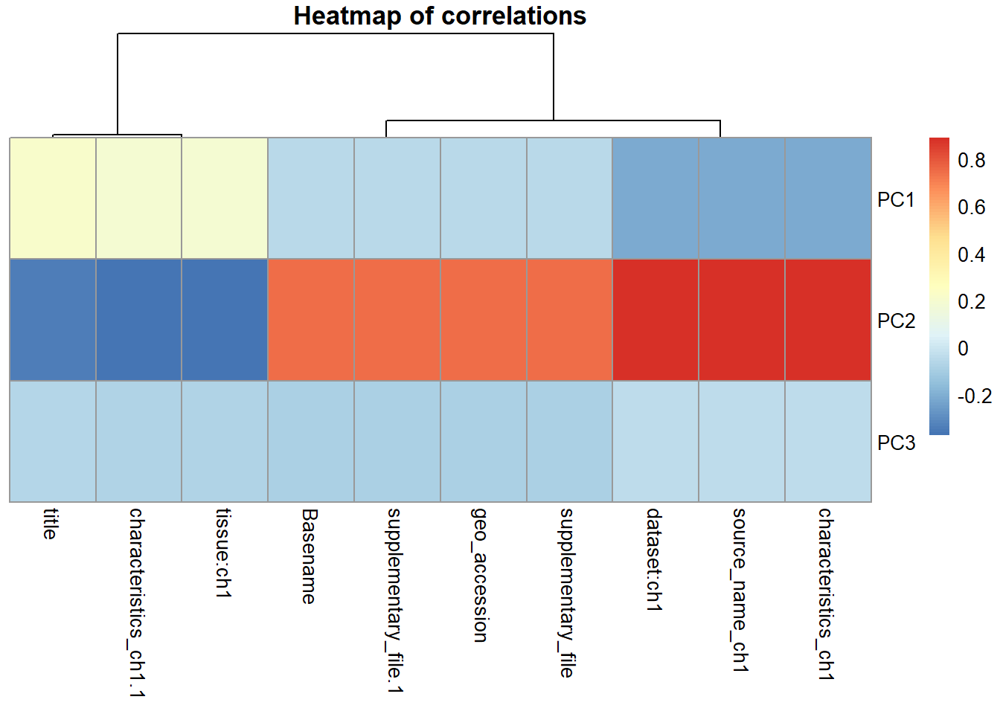
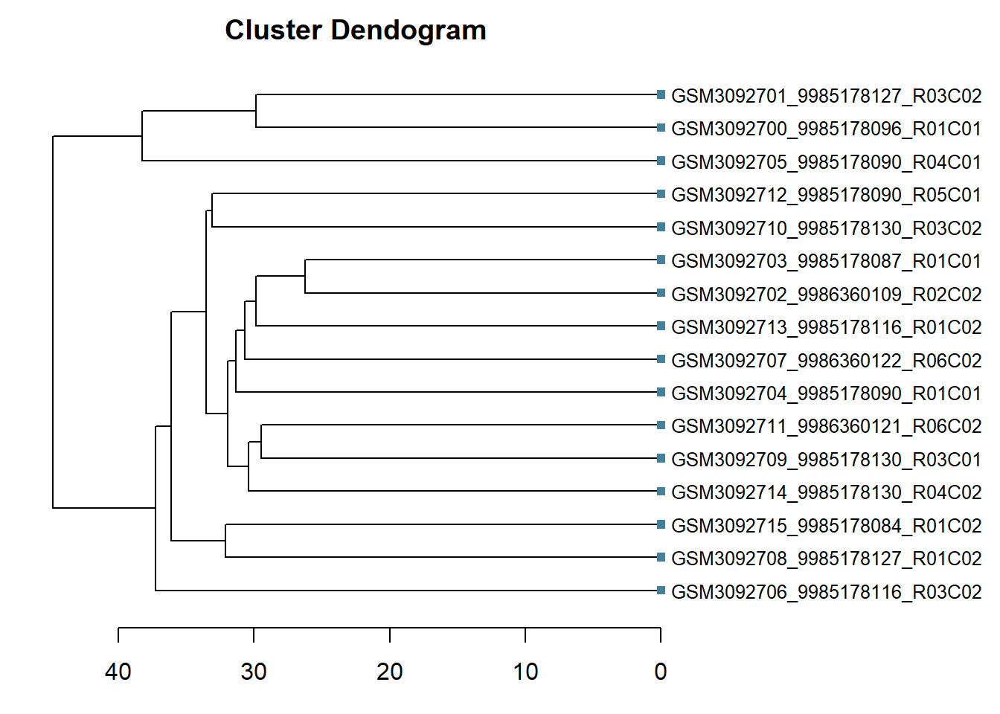
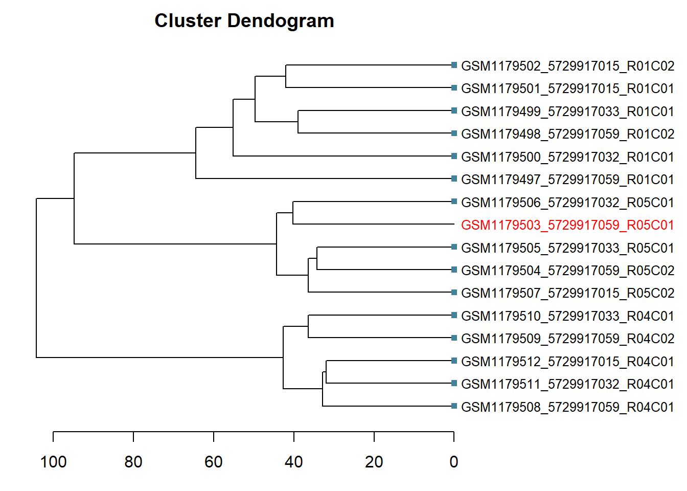

Beta density plots
Using densityPlot() from minfi (Aryee et al. 2014), we can visualize the per sample average beta-value distribution. This gives us a global impression of the data and allows us to identify possible anomalous samples. We expect this distribution to be bimodal with the peaks representing methylated and unmethylated signals. Any centre peaks should be further investigated for problems, such as ambiguous mapping.
library(minfi)
densityPlot(RGset, main="Beta density plot", xlab="Beta values")
For this data, the density plot is clearly bimodal with no obvious outliers. However, in order to further investigate the beta-values, we store them using the getBeta() function. Since some visualisations cannot handle NA values, we use the median to impute these. The type="Illumina" option adds 100 to the denominator of the beta-value calculation, preventing NA values being recorded when the methylated and unmethylated signal are both 0.
beta <- getBeta(RGset, type="Illumina")
beta[is.na(beta)] <- median(beta, na.rm=TRUE)Principal components plot
Using the prcomp_irlba() function from irlba we can calculate principal components. By assessing the amount of variance explained by these and visualising them, we can better interpret the data. For example, if there was evidence of clustering this might suggest grouping of samples, such as by sex if sex-chromosomes were not yet excluded.
library(irlba)
pc <- prcomp_irlba(t(beta), n=4)
summary(pc)## Importance of components:
## PC1 PC2 PC3 PC4
## Standard deviation 37.6135 31.0639 20.9449 16.20783
## Proportion of Variance 0.3227 0.2201 0.1001 0.05992
## Cumulative Proportion 0.3227 0.5428 0.6429 0.70283plot(pc$x, main="Principal components plot")
In this instance, our principal components explain nearly 65% of the variance in the data and there is no evidence of clustering.
Heatmap
Each column in the targets dataframe should be considered as a potential covariate in our models. Both technical and biological factors should be investigated as these may introduce batch effects or be clinically relevant. In order to assess this, we convert each column to a categorical variable whose correlations can be visualised.
Homogenous columns can be excluded, as any variables that do not change by definition cannot explain variation in the data. In this instance, the contact_institute for all samples is Leiden, so there is no need to investigate a city effect. However, in some instances samples may processed in different cities, meaning that this could introduce a batch effect that needed to be corrected for.
df <- apply(targets, 2, function(x) as.numeric(factor(x)))
keep <- apply(df, 2, sd) > 0
summary(keep)## Mode FALSE TRUE
## logical 24 10df <- df[ , keep]
colnames(df)## [1] "title" "geo_accession"
## [3] "source_name_ch1" "characteristics_ch1"
## [5] "characteristics_ch1.1" "supplementary_file"
## [7] "supplementary_file.1" "dataset:ch1"
## [9] "tissue:ch1" "Basename"As you can see, 10 columns need to be examined. These include sample-level variables, such as title, geo_accession, and the supplementary_file variables, but also other higher-level groupings. Since this dataset contained multiple tissues collected from both cadavers and healthy individuals, we need to consider the influence of these using source_name_ch1, characteristics_ch1.1, and tissue:ch1. There also may be batch effects from the different data sets recorded in characteristics_ch1 and dataset:ch1.
Correlations between these factors and the principal components is calculated, and then these are visualised using the pheatmap() function from pheatmap.
library(pheatmap)
cxy <- cor(pc$x, scale(df))
pheatmap(cxy, cluster_rows=FALSE, legend=TRUE, main="Heatmap of correlations")
Here we see grouping of similar covariates together, with three main considerations: tissue type, sample-level variations, and batches, including dataset and source. Carrying on analyses separately for each tissue type will likely be sufficient adjust for these variables.
Dendrogram
Although more frequently used for moderately-sized data sets, a dendogram can be helpful to visualise clustering. We use dist() to compute the distance matrix for the beta values, before implementing hierarchical cluster analysis with hclust() from the fastcluster-package. We then plot this clustering as a horizontal dendogram.
library(fastcluster)
sBeta <- getBeta(RGset[,1:16], type="Illumina")
d <- dist(t(sBeta), method="euclidean")
fit <- hclust(d, method="average")
fitdd <- as.dendrogram(fit)
nodePar <- list(lab.cex=0.8, pch=c(NA, 15), cex=0.8, col="#41819a")
par(mar=c(3,1,2,11))
plot(fitdd, main="Cluster Dendogram", horiz=TRUE, nodePar=nodePar, xlab="Height")
If an observation needs further investigation, we can identify it in the dendogram by highlighting it.
interestObs <- sample(colnames(sBeta), 1)
colorLeafs <- function(x) {
if (is.leaf(x) && attr(x, "label") %in% interestObs) {
attr(x, "nodePar") <- list(lab.cex=0.8, lab.col="red", pch=c(NA,15))
}
return(x)
}
dd <- dendrapply(as.dendrogram(fit), colorLeafs)
par(mar=c(3,1,2,11))
plot(dd, main="Cluster Dendogram", horiz=TRUE, nodePar=nodePar, xlab="Height")
References
Aryee, M. J., A. E. Jaffe, H. Corrada-Bravo, C. Ladd-Acosta, A. P. Feinberg, K. D. Hansen, and R. A. Irizarry. 2014. “Minfi: a flexible and comprehensive Bioconductor package for the analysis of Infinium DNA methylation microarrays.” Bioinformatics.